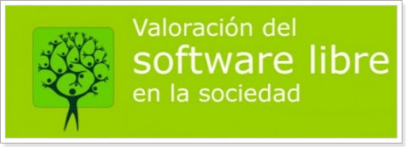

¿Que es el Software Libre?
 Libre, en Software Libre se refiere a la livertad, no a precio. Se ha utilizado en este sentido desde la decada de 1980,la primera definicion completa y documentada parece ser que aparecio en un Boletin de GNU, Vol.1, publicado en enero de 1989. En en concreto la cuatro libertades que definen al Software Libre: comunidad